Для відвідувачів сайту та зареєстрованих покупців: каталог, кошик, оформлення замовлення для себе або в дар закладу, бонусні бали й читацькі виклики.
Для когоГість і Користувач (покупець)Версія1.0, листопад 2026Відповідно доТЗ, розділ 5; SRS, вимога U8
1Перші кроки
ReadMania — інтернет-магазин книжок. Тут можна купити видання для себе або подарувати їх дитячому будинку, школі-інтернату чи бібліотеці. За покупки й оцінки ви отримуєте бонусні бали, якими потім оплачуєте частину наступних замовлень.
Сайт працює в будь-якому сучасному браузері (Chrome, Firefox, Safari, Edge) на комп’ютері, планшеті й телефоні. Нічого встановлювати не потрібно.
Меню вгорі сторінки змінюється залежно від того, чи ви увійшли. Після входу в ньому з’являються Подарунковий набір, Особистий кабінет і Кошик з кількістю примірників.
Мал. 1. Головне меню Користувача після входу
Пункт
Що відкриває
Каталог
Перелік усіх видань магазину; це також головна сторінка.
Подарунковий набір
Автоматичний підбір книг за жанрами й бюджетом (розділ 6).
Особистий кабінет
Ваші замовлення, оцінки, бонусні бали, виклики й профіль (розділ 7).
Довідка
Ця настанова.
Кошик
Обрані видання; число поруч — скільки примірників у кошику.
Увійти / Вийти
Вхід в обліковий запис або завершення сеансу.
На телефоні меню сховане під кнопкою з трьома рисками в правому верхньому куті.
2Каталог
Каталог відкривається одразу, коли ви заходите на сайт. Ліворуч — фільтри, праворуч — картки видань: обкладинка, назва, автор, жанр, середня оцінка, ціна й залишок.
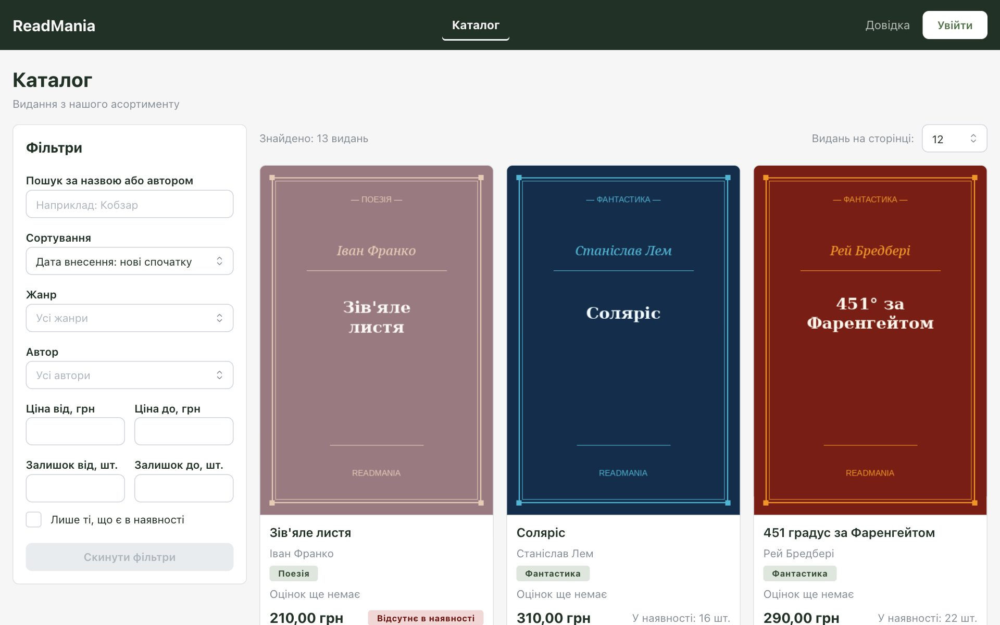
Мал. 2. Каталог: фільтри ліворуч, картки видань праворуч
Пошук і фільтри
У полі Пошук за назвою або автором введіть кілька літер, наприклад Кобзар або Франко. Результати оновлюються під час введення.
За потреби оберіть Жанр, Автор, діапазон ціни та залишку.
Позначте Лише ті, що є в наявності, щоб приховати видання, яких зараз немає.
Оберіть Сортування: за датою внесення, роком видання або ціною.
Щоб почати спочатку, натисніть Скинути фільтри.
Порада
Умови пошуку зберігаються в адресі сторінки. Скопіюйте адресу — і за цим посиланням відкриється той самий відфільтрований перелік.
Над картками показано, скільки видань знайдено. Кількість карток на сторінці можна змінити в полі Видань на сторінці, а перемикач сторінок розташований під переліком.
Сторінка видання
Натисніть на картку, щоб відкрити повний опис: видавництво, рік, ISBN, анотацію, середню оцінку й кількість оцінок.
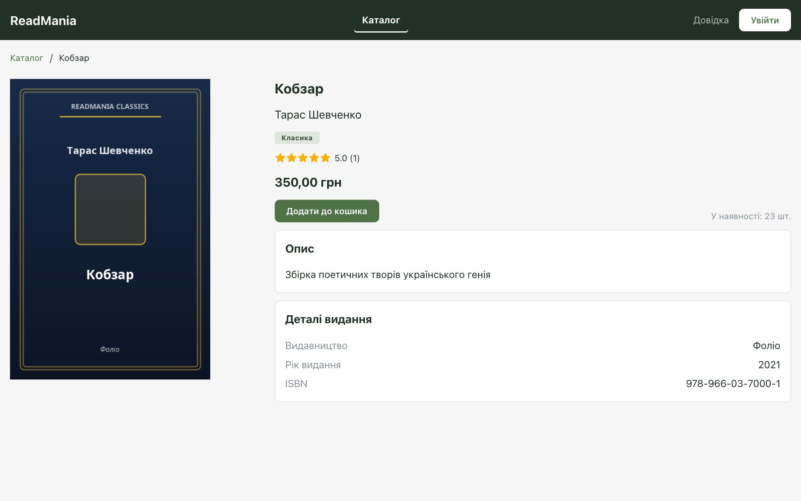
Мал. 3. Сторінка видання
Кнопка Додати до кошика доступна після входу. Якщо видання немає в наявності, замість залишку показано позначку Відсутнє в наявності, і додати його до кошика не можна.
3Обліковий запис
Реєстрація
Натисніть Увійти у верхньому меню й перейдіть на вкладку Реєстрація.
Вкажіть email, придумайте пароль (щонайменше 6 символів) і повторіть його в полі Підтвердження пароля.
Натисніть Зареєструватися. Ви одразу ввійдете в обліковий запис.
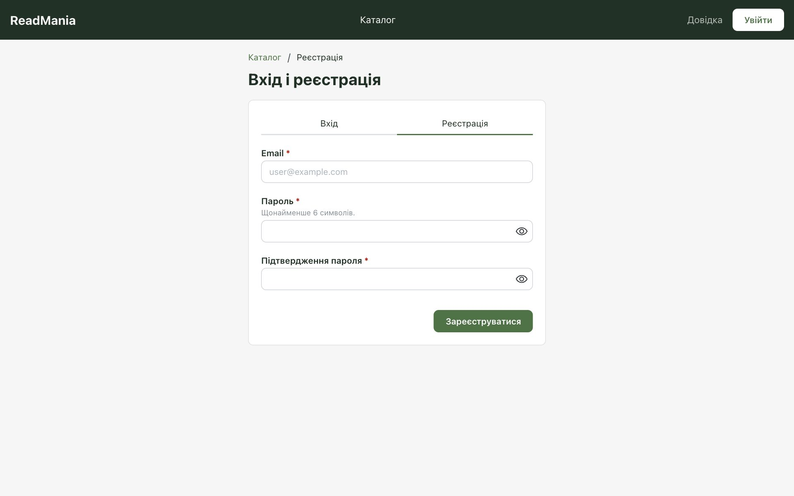
Мал. 4. Вкладка «Реєстрація»
Якщо email уже зареєстровано, сайт про це повідомить: увійдіть або скористайтеся відновленням пароля.
Вхід і вихід
Натисніть Увійти, введіть email і пароль.
Натисніть кнопку Увійти під формою. Після входу ви повернетеся на сторінку, з якої почали.
Щоб завершити роботу, натисніть Вийти у верхньому меню.
Обмеження безпеки
Після 5 невдалих спроб вхід для цього email призупиняється на 15 хвилин. Сайт покаже час, коли можна спробувати знову.
Якщо ви 30 хвилин нічого не робили на сайті, сеанс завершується автоматично. Просто увійдіть знову: кошик збережеться.
Відновлення пароля
На сторінці входу натисніть Забули пароль?.
Вкажіть email облікового запису й натисніть Надіслати посилання.
Відкрийте лист (перевірте й теку «Спам») і перейдіть за посиланням.
Введіть новий пароль двічі й натисніть Змінити пароль. Тепер увійдіть із новим паролем.
Посилання діє 1 годину й лише один раз. Якщо воно застаріло, запросіть нове.
Блокування й розблокування
Менеджер може заблокувати обліковий запис, наприклад якщо замовлення неодноразово не оплачували. Тоді під час входу ви побачите причину й дату блокування. Каталог залишається доступним без входу.
Натисніть Запит на розблокування у повідомленні про блокування.
Підтвердьте email і пароль та поясніть у полі Обґрунтування, чому обліковий запис варто розблокувати.
Натисніть Надіслати запит. Коли Менеджер розблокує запис, ви отримаєте лист і зможете ввійти.
Оформлені раніше замовлення, кошик, бали й оцінки під час блокування зберігаються.
4Кошик
Додайте видання кнопкою Додати до кошика в каталозі або на сторінці видання, а потім відкрийте Кошик у верхньому меню.
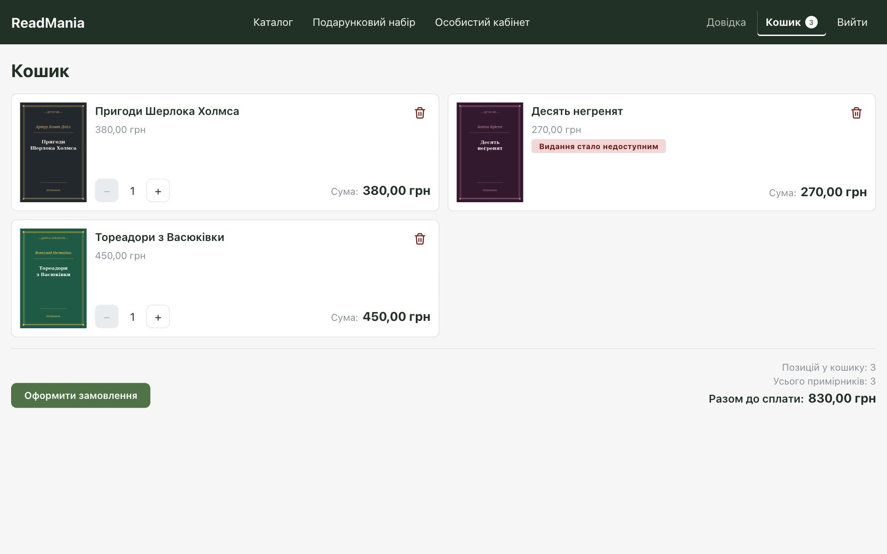
Мал. 5. Кошик
Кнопки − і + змінюють кількість примірників. Більше, ніж є на складі, обрати не можна.
Вилучити прибирає видання з кошика (після підтвердження).
Унизу показано кількість позицій, примірників і суму Разом до сплати. Видання, яких немає в наявності, до суми не входять.
Кошик зберігається в обліковому записі, тож він той самий на телефоні й комп’ютері. Коли все обрано, натисніть Оформити замовлення.
5Оформлення замовлення
На сторінці оформлення спершу оберіть Тип замовлення: для себе чи у дар закладу. Праворуч у блоці Підсумок завжди видно склад замовлення, знижку й суму до сплати.
Якщо частини видань уже немає
Жовте повідомлення Не всі видання буде оформлено означає, що деякі видання з кошика закінчилися. Замовлення оформиться на решту, а відсутні залишаться в кошику.
Для себе
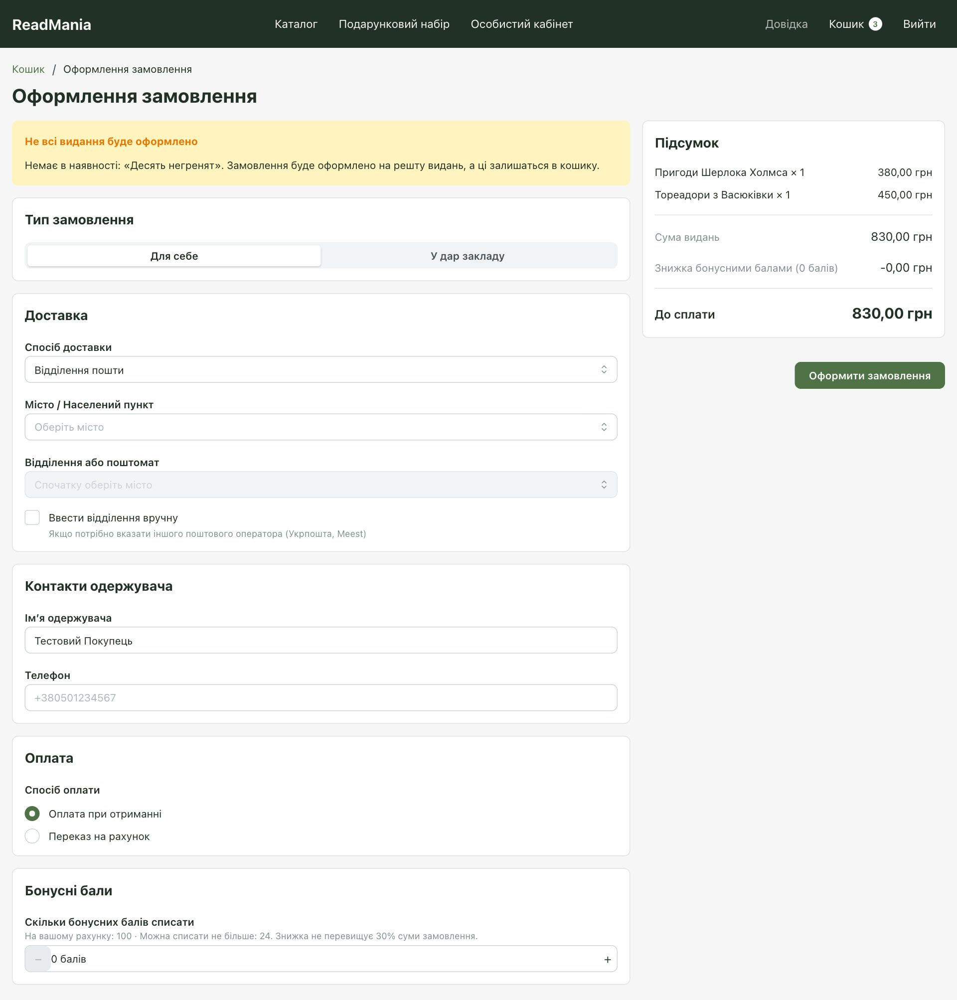
Мал. 6. Оформлення замовлення для себе
Доставка. Оберіть Відділення пошти або Кур’єр.
Для відділення введіть місто, а потім оберіть відділення чи поштомат «Нової пошти» зі списку.
Для іншого оператора (Укрпошта, Meest) позначте Ввести відділення вручну і вкажіть адресу відділення.
Для кур’єра вкажіть місто, вулицю й будинок.
Контакти одержувача. Ім’я та телефон у форматі +380501234567.
Оплата.Оплата при отриманні або Переказ на рахунок.
Перевірте Підсумок і натисніть Оформити замовлення. Відкриється сторінка нового замовлення: тут і в особистому кабінеті можна стежити за його статусом.
У дар закладу
Замовлення в дар доставляється не вам, а закладу-одержувачу: дитячому будинку, школі-інтернату чи бібліотеці. Адресу й контактну особу закладу підставляє система.
У блоці Тип замовлення оберіть У дар закладу.
У полі Заклад оберіть заклад зі списку.
Сплатіть замовлення переказом за реквізитами, показаними на сторінці. Для замовлення в дар доступний лише переказ на рахунок.
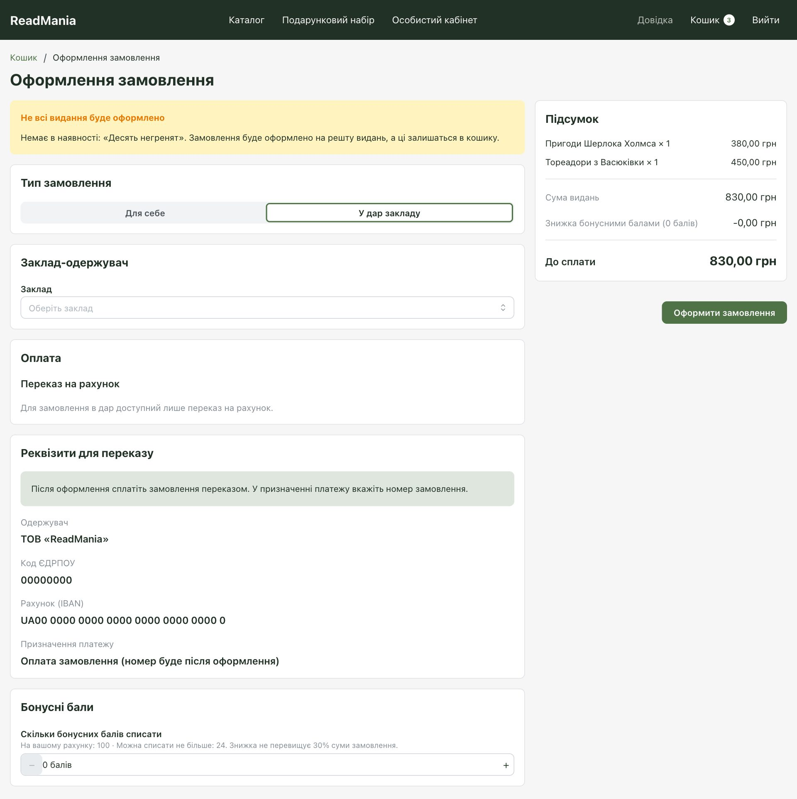
Мал. 7. Замовлення в дар: вибір закладу й реквізити для переказу
Після доставки книги потрапляють до журналу подарованих видань, а вам нараховуються бонусні бали, як і за звичайне замовлення.
Оплата бонусними балами
Правило
Значення
Вартість балу
1 бал = 10 грн знижки
Максимальна знижка
30% вартості видань у замовленні
Нарахування за покупку
1 бал за кожні повні 100 грн після доставки замовлення
Нарахування за оцінку
1 бал за кожне оцінене видання
Нарахування за виклик
нагорода, вказана в умовах виклику
У блоці Бонусні бали видно ваш баланс і найбільшу кількість балів, яку можна списати в цьому замовленні. Задайте кількість кнопками − / + або введіть число: знижка одразу з’явиться в підсумку. Якщо замовлення скасують, списані бали повернуться на рахунок.
Оплата переказом
Якщо ви обрали переказ, реквізити показано на сторінці оформлення й на сторінці замовлення в особистому кабінеті, доки його не оплачено. У призначенні платежу обов’язково вкажіть номер замовлення, наприклад Оплата замовлення №12.
Сплатіть протягом 7 днів
Замовлення з переказом, не оплачені понад 7 днів, Менеджер може скасувати. Тоді примірники повернуться до каталогу, бали — на ваш рахунок, а вам надійде лист.
6Подарунковий набір
Не знаєте, що обрати? Система сама випадково підбере видання, які є в наявності, за обраними жанрами й бюджетом.
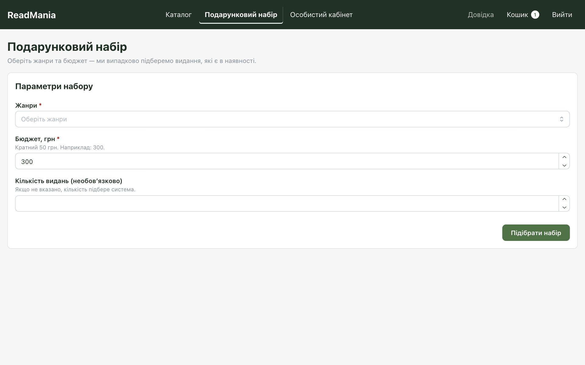
Мал. 8. Параметри подарункового набору
Відкрийте Подарунковий набір у верхньому меню.
Оберіть один або кілька жанрів.
Вкажіть бюджет у гривнях: від 50, кратний 50 (наприклад, 300).
За бажанням вкажіть кількість видань; якщо не вказати, її підбере система.
Натисніть Підібрати набір.
У результаті видно вартість набору й залишок бюджету. Набір можна підлаштувати:
Замінити — обрати інше видання в межах бюджету або Підібрати випадкове;
кнопка з кошиком у кутку картки — вилучити видання з набору;
Підібрати інший набір — почати з нуля з тими самими параметрами.
Коли набір готовий, натисніть Додати набір до кошика і оформіть замовлення для себе або в дар закладу.
7Особистий кабінет
Відкрийте Особистий кабінет у верхньому меню. Він має три вкладки: Замовлення, Виклики і бали та Профіль.
Мої замовлення
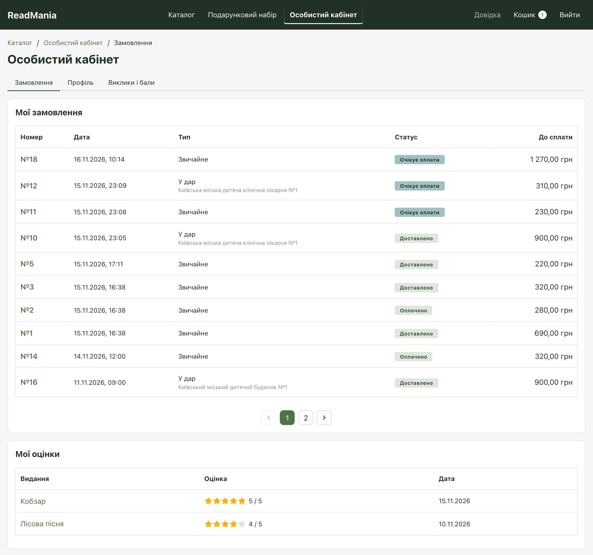
Мал. 9. Перелік замовлень і ваші оцінки
У переліку видно номер, дату, тип, статус і суму кожного замовлення; нові — зверху. Натисніть Відкрити, щоб побачити склад, доставку, оплату й історію статусів.
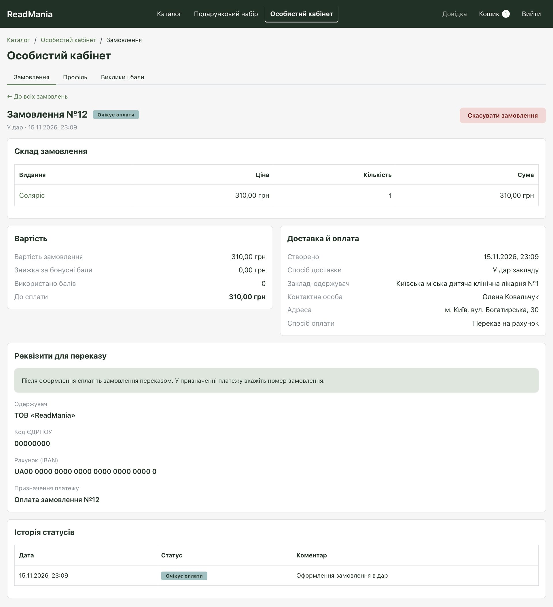
Мал. 10. Неоплачене замовлення з переказом: реквізити й кнопка скасування
Скасування. Кнопка Скасувати замовлення доступна лише для неоплаченого замовлення з оплатою переказом. Від замовлення з оплатою при отриманні можна відмовитися на пошті.
Статуси замовлення
Очікує оплати→Оплачено→Доставлено
Статус
Що означає
Очікує оплати
Замовлення оформлено. Для переказу — чекаємо на оплату; для оплати при отриманні — готуємо до відправлення.
Оплачено
Оплату переказом отримано, замовлення чекає на доставку.
Доставлено
Книги отримано. Нараховано бонусні бали, видання можна оцінити.
Скасовано
Замовлення скасовано вами або Менеджером. Списані бали повернуто.
Про кожну зміну статусу ви отримуєте лист.
Оцінювання видань
Відкрийте доставлене замовлення.
У таблиці Склад замовлення оберіть від 1 до 5 зірок біля видання.
Натисніть Оцінити. За кожну оцінку нараховується 1 бонусний бал.
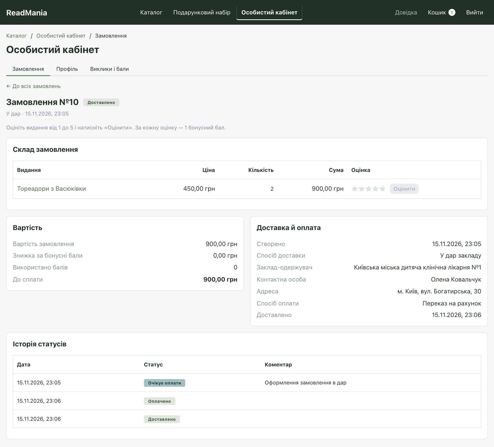
Мал. 11. Доставлене замовлення з оцінками видань
Усі ваші оцінки зібрано в блоці Мої оцінки на вкладці Замовлення.
Бонусні бали й читацькі виклики
На вкладці Виклики і бали зібрано:
Баланс бонусних балів;
Активні читацькі виклики з умовою, строком, нагородою й прогресом. Брати участь окремо не потрібно: ви берете участь у всіх активних викликах автоматично;
Виконані виклики з датою виконання;
Журнал бонусних балів: кожне нарахування й списання з датою та номером замовлення.
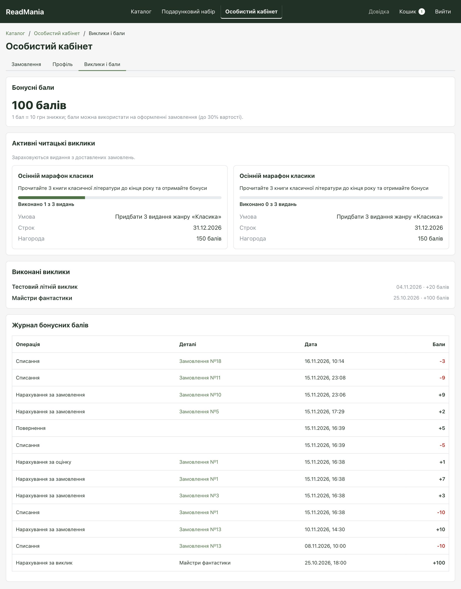
Мал. 12. Бонусні бали й читацькі виклики
Як рахується прогрес виклику
Зараховуються видання з доставлених замовлень за час дії виклику: від його створення до строку. Наприклад, виклик «Придбати 3 видання жанру «Класика»» буде виконано, щойно доставлять третю книгу цього жанру, і нагороду нараховано автоматично.
Профіль
На вкладці Профіль видно дату реєстрації й останнього входу. Тут можна змінити email або пароль. Для будь-якої зміни потрібно ввести поточний пароль.
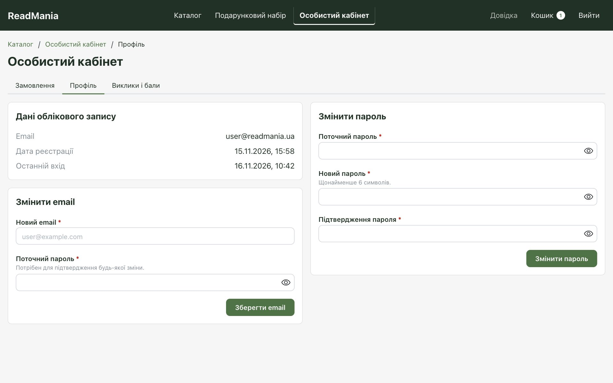
Мал. 13. Профіль
8Часті запитання
Не можу додати книгу до кошика.
Увійдіть в обліковий запис: кошик доступний лише Користувачам. Якщо ви вже ввійшли, видання, ймовірно, закінчилося.
Сайт пише «Сеанс завершено. Увійдіть знову».
Ви не працювали на сайті понад 30 хвилин. Увійдіть знову: кошик і замовлення збереглися.
Не приходить лист для відновлення пароля.
Перевірте теку «Спам» і правильність email. Якщо листа немає кілька хвилин, запросіть посилання ще раз.
Чому не можна списати всі бали?
Знижка балами не перевищує 30% вартості видань у замовленні. Решту балів можна використати наступного разу.
Коли нараховуються бали за покупку?
Після того як замовлення отримає статус «Доставлено»: 1 бал за кожні повні 100 грн.
Чому я не бачу кнопки «Скасувати замовлення»?
Скасувати можна лише неоплачене замовлення з оплатою переказом. Від замовлення з оплатою при отриманні відмовтеся на пошті.
Можна подарувати книги закладу, якого немає в списку?
Ні: список закладів веде Менеджер магазину. Зверніться до магазину, щоб заклад додали.
Мій обліковий запис заблоковано. Що робити?
Надішліть запит на розблокування з поясненням (розділ 3). Після розблокування ви отримаєте лист.